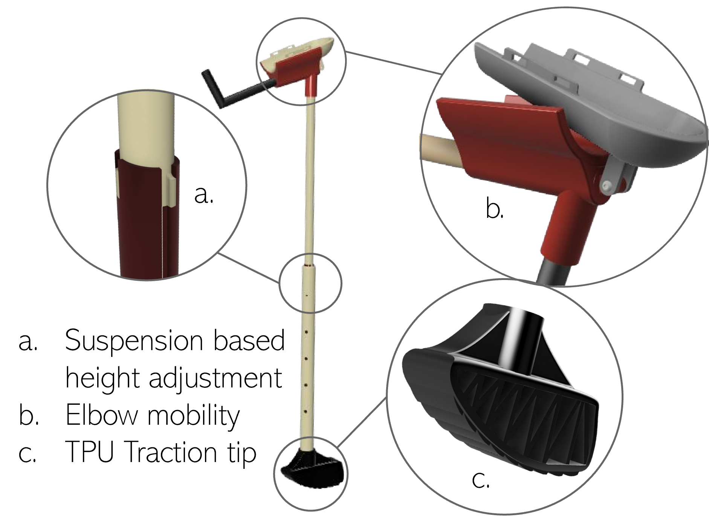
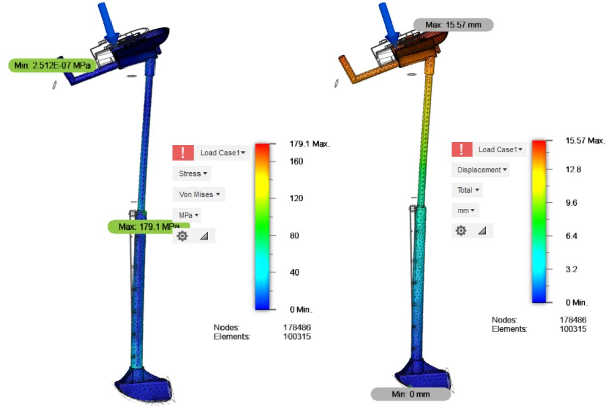
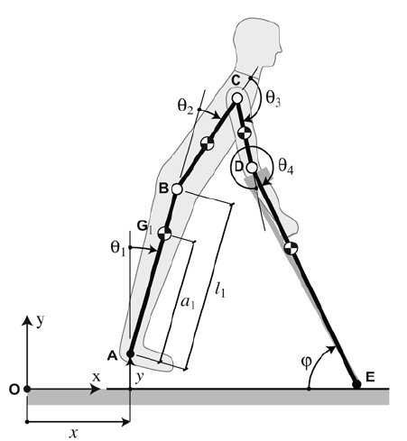
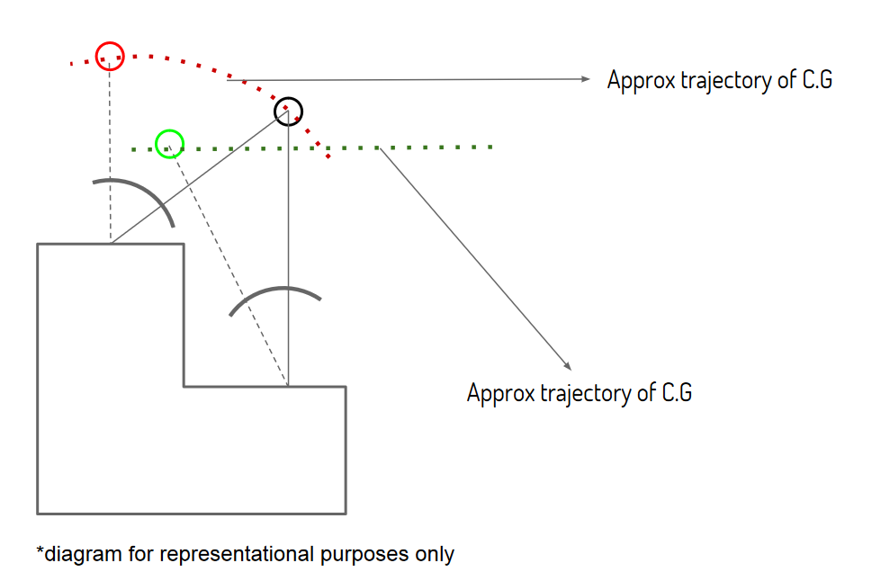

BeTIC Challenge: Ergonomic Crutch for patients of Indian demography

fig 1. Ergonimic crutch design and sailent features
Problem Description
There were three problem statements provided by BETiC Lab, IIT Bombay. We chose Ergonomic Crutches. its prolonged usage is harmful. Crutch palsy is one major problem with crutches. The prime objective is to reduce the chances of paralysis. The problem when briefed is crutches overload hands, wrist, elbows and armpits. They also affect our back and neck. This is because crutches put poorly dispersed forces on these part of the body. Another problem with them is that they are heavy, take too much space and are not foldable. High risk of tripping, inability of the user to carry things while using crutches. Climbing stairs is also an issue for crutch users.Highlights of problems in conventional crutch designs:
- Inability to climb-up staircases.
- Joint pain and risk of permanent injury in the Axillary joint.
- Restrained motion and slow pace in reaching object and sit-stand motion.
User Demo
Solution proposed
After doing proper background research, the team decided to propose a pair of elbow crutches. Having two crutches is beneficial because the load is distributed on both arms and three-point gait(one leg and two crutches) is more stable as compared to two-point gait(one leg and one crutch). The fundamental feature of this crutch being real-time height adjustment for climbing stairs and sitting on chairs. After doing preliminary analysis and ideation we developed, pruned and optimised our CAD model using FEA analysis for various loads and dynamics (on Autodesk Inventor & Fusion 360) simulating a real use case of the crutch. Finally manufactured and assembled the design as the proof of concept. We also proposed a TPU Traction tip which leverages its scientific design to provide crutch users a pleasant walking experience through varied surfaces on many different crutch types. It increases wet-slip traction with more individual points of traction in each movement. Walking up stairs and hills on crutches becomes easier. Our proposed Crutch Tip redistributes the user's weight in a forward assisting motion. We made the proof of concept with aluminium, 3d printed the crutch tip with TPU and carbon fibre for the rest of the parts to achieve high durability with least weight.

fig 2. FEA - Load analysis
 fig 3. Traction TPU tip design
fig 3. Traction TPU tip design

fig 4. Crutch user free body diagram

fig 5. CG Gait pattern while walking on the staircase